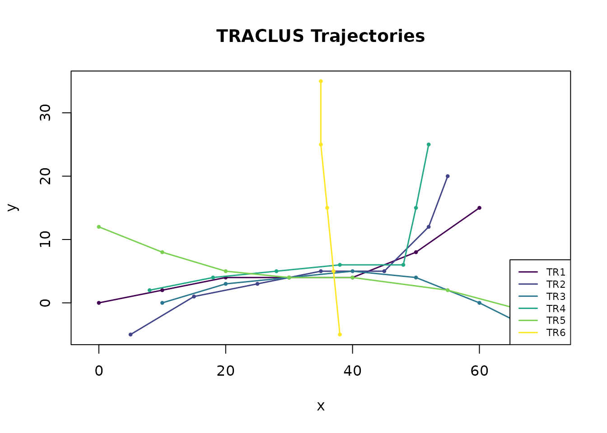
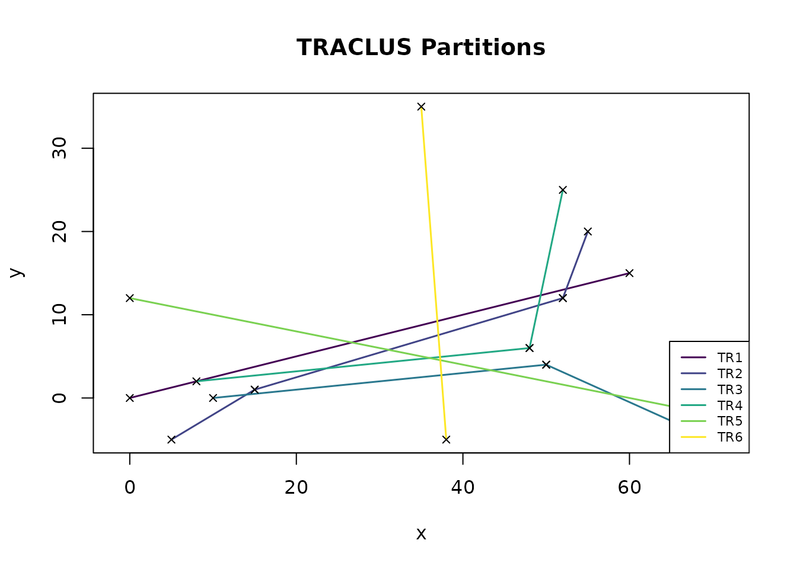
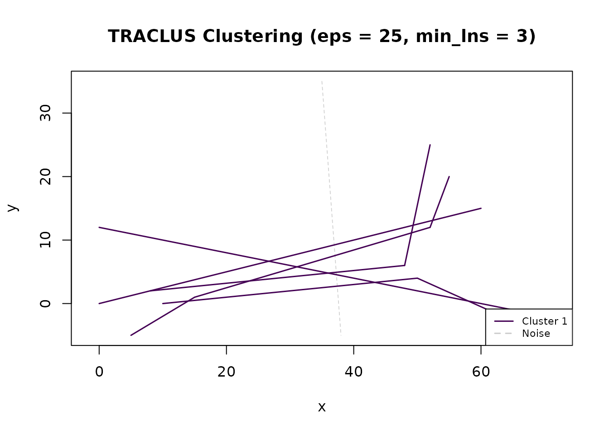
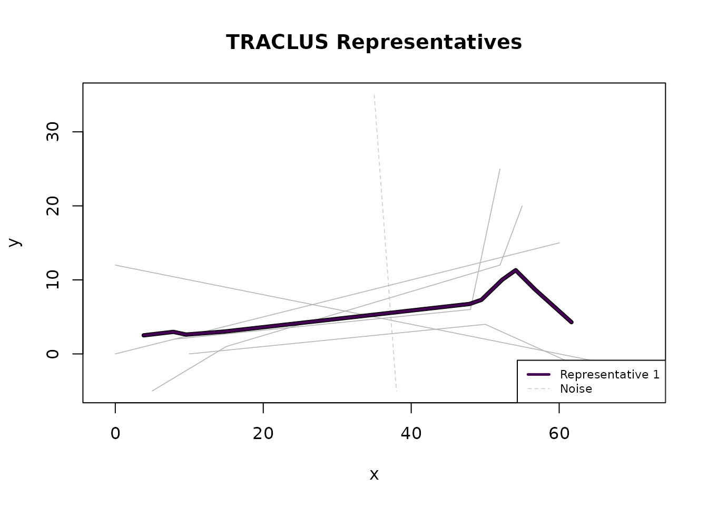
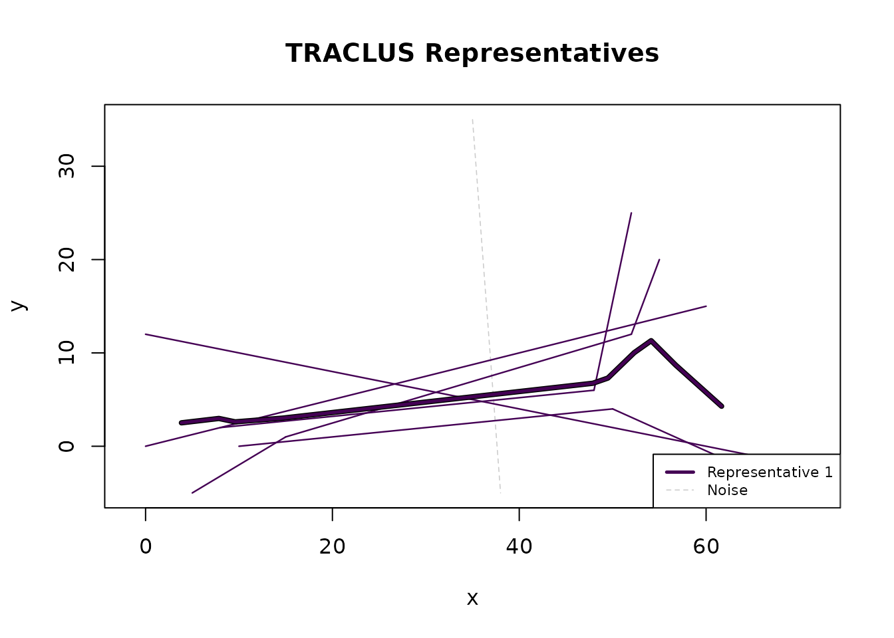

Overview
The TRACLUS package implements the trajectory clustering algorithm by Lee, Han & Whang (SIGMOD 2007). The algorithm works in three phases:
- Partition trajectories into line segments using Minimum Description Length (MDL).
- Cluster segments via DBSCAN density-based spatial clustering.
- Represent each cluster with a representative trajectory using a sweep-line algorithm.
This vignette walks through the complete workflow using the built-in toy dataset.
Step 1: Load and prepare data
TRACLUS expects a data.frame with columns for trajectory ID,
x-coordinate, and y-coordinate. The built-in traclus_toy
dataset contains 6 euclidean trajectories:
head(traclus_toy)
#> traj_id x y
#> 1 TR1 0 0
#> 2 TR1 10 2
#> 3 TR1 20 4
#> 4 TR1 30 4
#> 5 TR1 40 4
#> 6 TR1 50 8
trj <- tc_trajectories(traclus_toy,
traj_id = "traj_id",
x = "x", y = "y", coord_type = "euclidean"
)
#> Loaded 6 trajectories (40 points).
trj
#> TRACLUS Trajectories
#> Trajectories: 6
#> Points: 40
#> Coord type: euclidean
#> Method: euclidean
#> Status: loaded (run tc_partition next)Visualise the raw trajectories:
plot(trj)
Step 2: Partition trajectories
MDL-based partitioning splits each trajectory at characteristic points where the trajectory changes direction significantly:
parts <- tc_partition(trj)
#> Partitioned 6 trajectories into 10 line segments.
parts
#> TRACLUS Partitions
#> Trajectories: 6
#> Segments: 10
#> Coord type: euclidean
#> Method: euclidean
#> Status: partitioned (run tc_cluster next)
plot(parts)
The black X markers show the characteristic points selected by the MDL criterion. Each trajectory is now represented as a sequence of line segments.
Step 3: Cluster segments
DBSCAN groups similar line segments into clusters. Two key parameters control the result:
-
eps: Maximum distance between segments to be considered neighbours. -
min_lns: Minimum number of neighbouring segments to form a cluster.
clust <- tc_cluster(parts, eps = 25, min_lns = 3)
#> Clustering: 1 cluster(s), 1 noise segment(s).
clust
#> TRACLUS Clusters
#> Clusters: 1
#> Noise segs: 1
#> Total segs: 10
#> eps: 25 (coordinate units)
#> min_lns: 3
#> Coord type: euclidean
#> Method: euclidean
#> Status: clustered (run tc_represent next)
plot(clust)
Segments that do not belong to any cluster are classified as noise (shown as dashed grey lines).
Step 4: Generate representative trajectories
The sweep-line algorithm creates a representative trajectory for each cluster by averaging the contributing segments:
repr <- tc_represent(clust)
#> Representatives: 1 trajectory(ies).
repr
#> TRACLUS Representatives
#> Clusters: 1
#> Noise segs: 1
#> Waypoints: 10 total (10 per representative)
#> gamma: 1
#> min_lns: 3
#> Coord type: euclidean
#> Method: euclidean
#> Status: complete
plot(repr)
Use show_clusters = TRUE to see the cluster segments in
colour alongside the representatives:
plot(repr, show_clusters = TRUE)
One-call pipeline
For convenience, tc_traclus() runs the entire pipeline
in a single call:
result <- tc_traclus(trj, eps = 25, min_lns = 3)
#> Partitioned 6 trajectories into 10 line segments.
#> Clustering: 1 cluster(s), 1 noise segment(s).
#> Representatives: 1 trajectory(ies).
result
#> TRACLUS Result (all-in-one)
#> Clusters: 1
#> Noise segs: 1
#> Waypoints: 10 total (10 per representative)
#> eps: 25 (coordinate units)
#> min_lns: 3
#> gamma: 1
#> Coord type: euclidean
#> Method: euclidean
#> Status: complete
plot(result)
Inspecting results
Every object has print(), summary(), and
plot() methods:
summary(result)
#> TRACLUS Result - Summary
#> Input trajs: 6
#> Partitioned into: 10 segments
#> Clusters: 1
#> Total segments: 10
#> Noise segments: 1 (10.0%)
#> WPs per repr: min = 10, median = 10, max = 10
#> eps: 25 (coordinate units)
#> min_lns: 3
#> gamma: 1
#> Coord type: euclidean
#> Method: euclideanTrial-and-error: re-clustering with different parameters
A key design feature of TRACLUS is that each phase returns a
new object without modifying its input. This means you
can re-use the same tc_partitions object to try different
eps and min_lns values — no need to
re-partition every time:
# Partition once
parts <- tc_partition(trj)
#> Partitioned 6 trajectories into 10 line segments.
# Try different clustering parameters on the same partitions
clust_tight <- tc_cluster(parts, eps = 15, min_lns = 3)
#> Clustering: 1 cluster(s), 3 noise segment(s).
clust_medium <- tc_cluster(parts, eps = 25, min_lns = 3)
#> Clustering: 1 cluster(s), 1 noise segment(s).
clust_wide <- tc_cluster(parts, eps = 40, min_lns = 2)
#> Clustering: 1 cluster(s), 1 noise segment(s).
cat(sprintf(
"eps=15: %d cluster(s), %.0f%% noise\n",
clust_tight$n_clusters,
100 * clust_tight$n_noise / nrow(clust_tight$segments)
))
#> eps=15: 1 cluster(s), 30% noise
cat(sprintf(
"eps=25: %d cluster(s), %.0f%% noise\n",
clust_medium$n_clusters,
100 * clust_medium$n_noise / nrow(clust_medium$segments)
))
#> eps=25: 1 cluster(s), 10% noise
cat(sprintf(
"eps=40: %d cluster(s), %.0f%% noise\n",
clust_wide$n_clusters,
100 * clust_wide$n_noise / nrow(clust_wide$segments)
))
#> eps=40: 1 cluster(s), 10% noiseThis makes parameter exploration fast and convenient. See
vignette("TRACLUS-parameter-guide") for systematic guidance
on choosing good values.
Which coord_type do I need?
When creating trajectories with tc_trajectories(), the
coord_type argument tells TRACLUS how to measure distances:
| Your data | coord_type | eps units |
|———–|————–|————-| | Synthetic / simulation (arbitrary x, y) |
"euclidean" | Same as your coordinates | | GPS tracks, ship
routes, flight paths (lon, lat in degrees) | "geographic" |
Metres | | OpenStreetMap or any WGS-84 source |
"geographic" | Metres |
Coordinate convention for geographic data:
x = longitude (−180 to 180), y = latitude (−90
to 90). This follows the mathematical convention (x = horizontal axis).
If your data has latitude first, swap the column assignments:
# Latitude-first data? Just swap x and y:
trj <- tc_trajectories(df, traj_id = "id",
x = "longitude", y = "latitude",
coord_type = "geographic")TRACLUS will warn you if it detects that x and y might be swapped (e.g., all x values in [−90, 90] while y values are outside that range).
For geographic data, you can also control how distances are
computed with the optional method argument:
-
method = "projected"(default): 5–10× faster than haversine with < 2 % error. Recommended for most regional datasets. -
method = "haversine": Exact great-circle distances. Use for global datasets or when maximum accuracy is needed.
See vignette("TRACLUS-spherical-geometry") for a full
comparison of the three available methods.
Using sf objects
If your data is already an sf object, you can pass it
directly to tc_trajectories() — no need to specify
x, y, or coord_type:
if (requireNamespace("sf", quietly = TRUE)) {
geo <- data.frame(
id = rep(c("A", "B", "C"), each = 5),
lon = c(-80, -78, -76, -74, -72, -82, -79, -76, -73, -70, -60, -58, -56, -54, -52),
lat = c(25, 26, 27, 28, 29, 24, 25, 26, 27, 28, 30, 31, 32, 33, 34)
)
geo_sf <- sf::st_as_sf(geo, coords = c("lon", "lat"), crs = 4326)
trj_sf <- tc_trajectories(geo_sf, traj_id = "id")
trj_sf
}
#> Loaded 3 trajectories (15 points).
#> TRACLUS Trajectories
#> Trajectories: 3
#> Points: 15
#> Coord type: geographic
#> Method: haversine
#> Status: loaded (run tc_partition next)Three requirements apply to sf input:
-
POINT geometry required. Other geometry types must be converted first:
point_sf <- sf::st_cast(your_sf, "POINT") -
CRS must be set. The CRS determines whether distances are geographic or euclidean. If missing, assign it before calling
tc_trajectories():data_sf <- sf::st_set_crs(data_sf, 4326) # WGS-84 Z/M coordinates are dropped. Only X and Y are used by TRACLUS.
Next steps
- See
vignette("TRACLUS-real-world")for an example with real hurricane track data. - See
vignette("TRACLUS-parameter-guide")for guidance on choosingepsandmin_lns. - See
vignette("TRACLUS-spherical-geometry")for details on geographic (spherical) distance calculations.